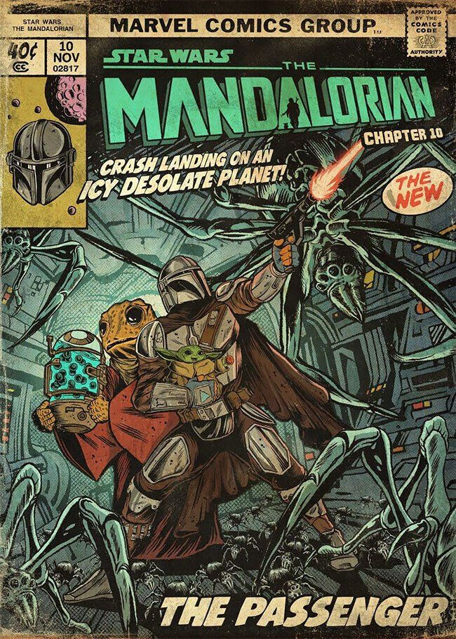

"Mando" revitalizó el universo Star Wars
Después de las divisiones generadas por la última trilogía de películas, The Mandalorian se convirtió en un bálsamo para los fans. Con un enfoque minimalista, una estética de western espacial y personajes nuevos como Din Djarin y Grogu (Baby Yoda), la serie ofreció una nueva puerta de entrada al universo sin depender completamente de los Skywalker.
El estilo narrativo pausado, junto a la construcción de un mundo lleno de matices, permitió que la audiencia explorara la galaxia más allá de las grandes guerras. Además, recuperó el espíritu de aventura y asombro que muchos sentían que se había perdido en las entregas recientes.
Con la dirección de talentos como Jon Favreau y Dave Filoni, The Mandalorian mostró que Star Wars todavía tiene mucho por contar. El éxito de la serie no solo trajo múltiples spin-offs, sino que también reforzó el potencial de contar historias íntimas en un universo inmenso. En cierto modo, fue el renacer de una galaxia muy, muy lejana.
← Volver a curiosidades de Star wars